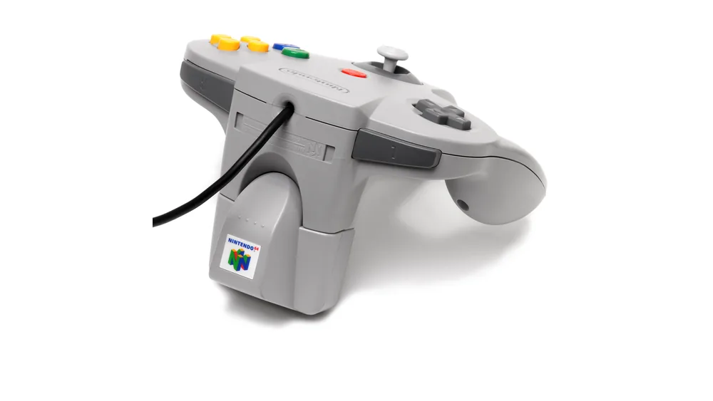
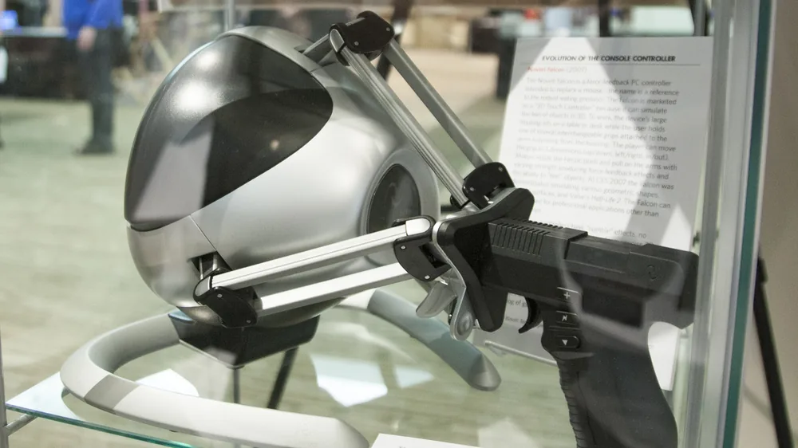
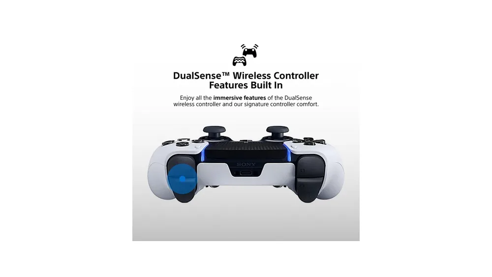
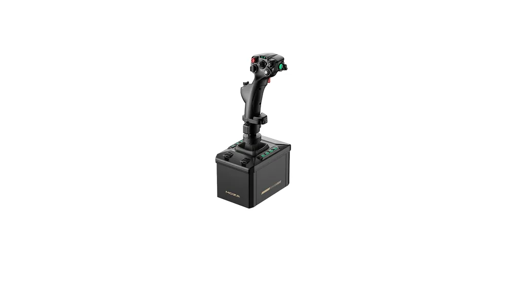

A short timeline
| Period | Milestone | What happened |
|---|---|---|
| Late 1940s–1950s | Aircraft | Large aircraft used servomechanisms to move control surfaces. Feeding the forces back to the pilot’s controls was one of the first uses of force feedback[1]. |
| 1970s | Research labs | The University of North Carolina and MIT built the first computer-linked force-feedback arms, used for 3D design and molecular docking. |
| 1976 and 1983 | Arcades | Sega’s Moto-Cross made the handlebars vibrate on a collision. Tatsumi’s TX-1 later brought force feedback to driving games. |
| 1997 | Consoles and PCs | Nintendo’s Rumble Pak added vibration to the Nintendo 64 controller[2], and Microsoft released the SideWinder Force Feedback Pro joystick. |
| 2001 | Built-in rumble | The GameCube controller included the rumble motor, so no separate accessory was needed. |
| 2007 | Novint Falcon | The first consumer device with high-resolution 3D force feedback. |
| 2015–2020 | Precision haptics | Apple’s Taptic Engine simulated button clicks on trackpads and phones. Nintendo’s Joy-Con (2017) introduced “HD Rumble”, and Sony’s DualSense (2020) replaced traditional rumble motors with more precise actuators. |




How the vibration is made
Most early devices used eccentric rotating mass (ERM) motors, a motor with an unbalanced weight that spins and shakes the device. Newer devices use linear resonant actuators (LRA), which move a mass back and forth with a magnetic coil. Piezoelectric actuators are even more precise and quieter, but need higher voltages.